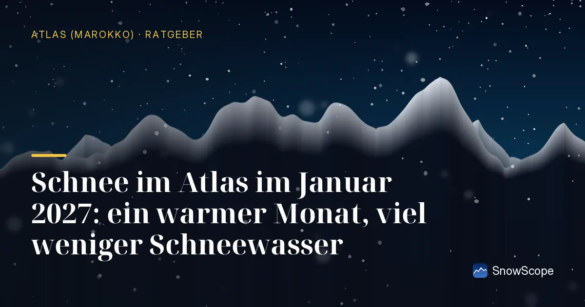

Schnee im Atlas im Januar 2027: ein warmer Monat, viel weniger Schneewasser
Ein warmer Januar liegt vor Marokkos Bergen. Die Saisonprognose deutet auf Temperaturen 2 °C über dem Normalwert und Niederschlag nahe dem Durchschnitt hin, was zusammen Regen statt Schnee an den mittleren Hängen begünstigt. Mit 45 vergangenen Wintern zum Vergleich ist die Aussicht ungefähr ein Drittel des typischen Januarschneewassers: etwa 69 Millionen m³ statt 206.
Die Live-Schneeprognose für Atlas in der SnowScope-AppSchneehöhen, Pulverschnee-Alarme und 3D-Karte, gratis.

Wo die Schneeaussichten schwinden
Die SnowScope-Karte teilt den Atlas in Gebiete von etwa 10 km ein und vergleicht jedes mit seiner eigenen Geschichte von Januaren. Das ganze Hochgebirge, das normalerweise in diesem Monat Schnee hält, neigt sich zur Trockenheit. Die Wahrscheinlichkeit, dass ein Gebiet tiefer Schnee als üblich hat, liegt zwischen 24 % und 35 %, mit einem typischen Wert um 28 %. Kein Gebiet deutet auf einen schneereichereren Monat hin.
Das Muster ist konsistent von West nach Ost: Toubkal im westlichen Hohen Atlas, M'Goun in der Mitte, Ayachi im Osten und Bou Iblane im Mittleren Atlas zeigen alle die gleiche Tendenz.
Temperatur und Regen: wenn Kälte zählt
Der Niederschlag bleibt nahe am üblichen Bereich und schwankt zwischen 5 % unter und 1 % über dem Normalwert in verschiedenen Gebieten.
Im Atlas verschiebt ein paar Grad die Grenze zwischen Schnee und Regen. Diese Linie liegt zwischen 2.000 und 2.500 m Höhe. Wenn Januar so warm ist, bringen Stürme zwar Wasser – aber an den mittleren und unteren Hängen kommt es als Regen an, nicht als Schnee. Nur die höchsten Grate und nordseitigen Hänge über 2.500 m halten den Schnee länger.


Was die hohen Massive erwarten
An den Gipfeln (über 2.500 m, bzw. 2.300 m am Bou Iblane) liegt die durchschnittliche Schneetiefe im Januar normalerweise bei 5 cm am Toubkal, 6 cm am M'Goun, 10 cm bei Ayachi und 8 cm am Bou Iblane. Dies sind Becken-Durchschnitte – sonnige Südhänge schmelzen schnell, während Nordhänge tiefer bleiben. Die Prognose kürzt diese um ungefähr die Hälfte: auf 3, 3, 5 und 4 cm.
Schneewasseräquivalent (das Wasser, das beim Schmelzen freigesetzt wird; 1 mm entspricht 1 Liter pro Quadratmeter) erzählt die trockenere Geschichte. Ein typischer Januar hält 10 mm am Toubkal, 16 mm am M'Goun, 24 mm bei Ayachi und 16 mm am Bou Iblane. Die Prognose reduziert diese auf 7, 7, 12 und 8 mm. Der Anteil des Hochgebirges, das Schnee hält, fällt deutlich: M'Goun von 69 % auf 41 %, Ayachi von 77 % auf 60 %.

Bergwasser für die Täler darunter
Schnee speichert Wasser für die Flüsse und Dämme, die die Tiefländer im Frühling versorgen. Summiert über alle Marokkos Berge hält ein normaler Januar 206 Millionen m³ Wasser gefroren in der Schneedecke. Diese Prognose erwartet 69 Millionen m³, ein Bereich, der höchstwahrscheinlich zwischen 31 und 235 liegt, mit nur 31 % Wahrscheinlichkeit, die übliche Summe zu übersteigen.
Das Oum Er-Rbia-Becken, das den zentralen und östlichen Hohen Atlas entwässert, hält normalerweise 96 Millionen m³ im Januar; die Prognose ist 30. Die Moulouya (normalerweise 36, Prognose 12), Draa (normalerweise 26, Prognose 11), Sebou (normalerweise 15, Prognose 5) und Tensift (normalerweise 14, Prognose 7) neigen alle zum Magereren. Dieser Januarschnee wird im Frühling schmelzen; es sei denn, Februar und März bringen mehr Schnee, die Flüsse werden weniger Schmelzwasser zu den Stauseen bringen.


Lektionen aus ähnlichen Wintern
Die vergangenen Januare, deren Wetter diesem dieser Prognose am ähnlichsten ist, sind 2016, 2024 und 1998. Wenn wir sie vergleichen, sehen wir, dass magererer Schnee in warmen Jahren vorkommt, aber es ist nicht sicher – ein starker Atlantikstum kann immer noch Schnee über die hohen Pässe werfen.
Eine Saisonprognose verschiebt die Chancen über den Monat, sie sperrt kein einzelnes Ergebnis fest. Für Entscheidungen über Skifahrten, Wasserversorgung oder Schneetouren überprüfe die 7-Tage-Vorhersage, wenn der Januar verstreicht und nach Stürmen.
Tipps für Skifahrer
- Plane Skitouren zum Hohen Atlas für Mitte oder Ende Januar, nach Atlantikstürmen, statt am Anfang des Monats.
- Ziele die Gipfel und Nordhänge bei 2.500 m und höher an: diese halten Schnee am längsten in einem warmen Monat.
- Beobachte die SnowScope-Karte täglich im Januar, um die Schneelinie zu verfolgen, wenn sie nach jedem Sturm verschiebt; vermeide blanken Boden.
- Für Wasserwirtschafter: ein magerer Januar bedeutet, dass die Frühjahrsabflüsse mehr von Februar–März-Wetter abhängen. Überwache die gesamte Wintersaison, nicht nur diesen Monat.
- Wenn die 7-Tage-Vorhersage einen Kälteeinbruch oder Sturm zeigt, das ist dein Signal, Neuschnee zu erwarten; warme Phasen bedeuten Regen auch im Hochgebirge.
Zu diesen Zahlen
Die Schneehöhen der Skigebiete sind der meiste Schnee in den oberen Hängen am angegebenen Tag; es sind Schätzungen für eine Fläche, keine Messung an einem Punkt. Prognosen können sich ändern. Lies vor dem Freeriden immer den offiziellen Lawinenlagebericht.
Diesen Bericht zitieren
Für Forschung, Lehre oder Presse: Zahlen und Grafiken sind unter CC BY 4.0 mit dieser Quellenangabe frei nutzbar.
SnowScope (2026), Schnee im Atlas im Januar 2027: ein warmer Monat, viel weniger Schneewasser, https://snowscope.app/blog/de/2026/11/atlas-january-2027-snow-outlook.html, abgerufen am 2026-11-10
SnowScope (Atlas Labs). (2026, November 10). Schnee im Atlas im Januar 2027: ein warmer Monat, viel weniger Schneewasser. SnowScope snow reports. https://snowscope.app/blog/de/2026/11/atlas-january-2027-snow-outlook.html
BibTeX
@misc{snowscope2026atlasjanuary2027snowoutl,
author = {{SnowScope (Atlas Labs)}},
title = {Schnee im Atlas im Januar 2027: ein warmer Monat, viel weniger Schneewasser},
year = {2026},
month = nov,
howpublished = {\url{https://snowscope.app/blog/de/2026/11/atlas-january-2027-snow-outlook.html}},
note = {Published 2026-11-10 10:59 UTC; accessed 2026-11-10}
}· CC BY 4.0 · Methoden, Daten und Werkzeuge →
Atlas folgen
Gratis: eine Nachricht, wenn Neuschnee kommt, und jeden Morgen die Vorhersage.